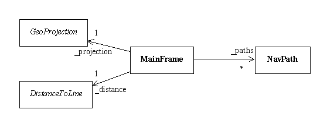
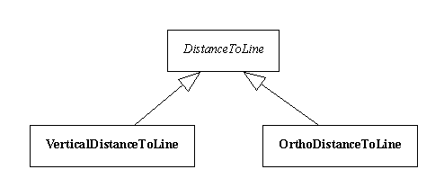
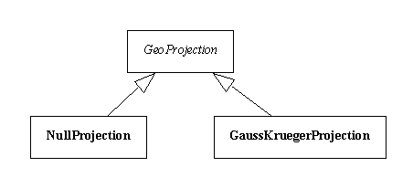
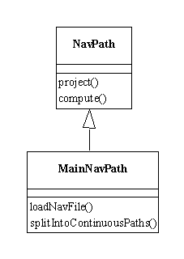

Les classes utilisée dans ce projet sont réparties en cinq packages :
|
ifremer.sismer.endsandbends |
Package principal contenant le point d’entrée et les principales classes |
|
ifremer.sismer.endsandbends.ui |
Classes de l’interface utilisateur |
|
ifremer.sismer.endsandbends.resources |
Fichiers de ressources (texte et images) |
|
ifremer.sismer.endsandbends.algorithm |
Classes permettant de paramétrer l’algorithme (projection et calcul de distance) |
|
ifremer.sismer.endsandbends.common |
Classes utilitaires |
La fenêtre principale de l’application est le support des tous les objets manipulés. Cette fenêtre est implémentée dans la classe MainFrame.

Figure 2, classe MainFrame.
Cette classe porte en particulier :
Outre ces objets, la classe MainFrame implémente tous les éléments visuels qui composent l’interface utilisateur.
Deux types de distances sont implémentées :

Figure 3, classes des distances.
Deux types de projection sont également implémentées :

Figure 4, classes de projection.
L’objet central de cette application est le segment, représenté par une instance de la classe NavPath.
Un segment est constitué de :

Figure 5, classes représentant les segments.
La classe NavPath implémente également les méthodes principales du traitement :
|
project() |
projection des points constituants le segment, c’est à dire calcule des coordonnées (x,y) à partir des latitudes et longitudes |
|
splitProjection() |
découpe du segment en fonction de la projection |
|
compute() |
calcul automatiques des modèles en fonction du niveau d’erreur et du nombre de points |
|
computeUser() |
calcul d’un modèle en fonction d’un nombre de points cible défini par l’opérateur |
Lors du chargement d’un fichier de navigation, l’application ne créé pas directement les segments dans des instances de NavPath, elle commence par créer un seul segment, comme une instance de la classe MainNavPath.
La classe MainNavPath, contient des méthodes qui permettent de charger un fichier SMF de navigation et de décomposer la campagne en segments continus, donc en une liste d’instances de NavPath.
|
loadNavFile() |
chargement d’un fichier de navigation |
|
splitIntoContinuousPaths () |
décomposition en segments continus, la méthode renvoie un tableau d’instances de NavPath |